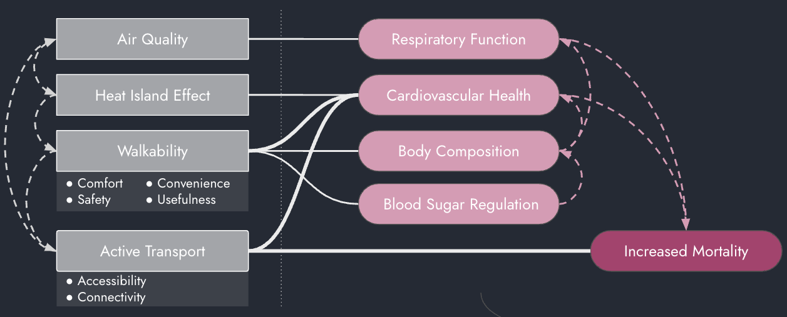
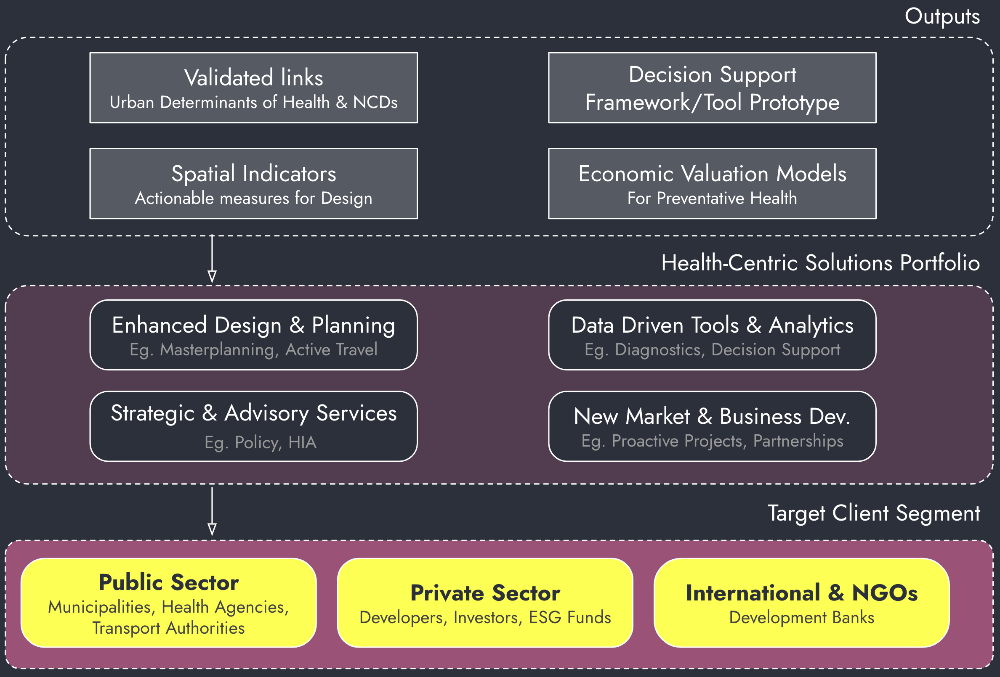
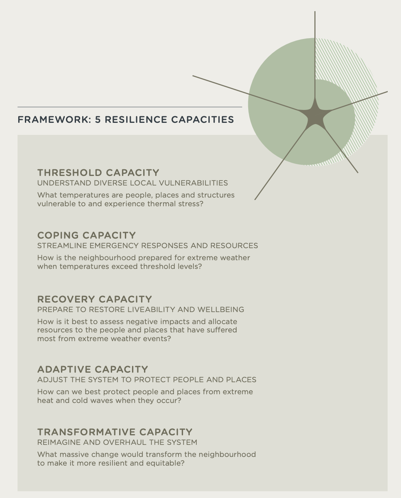
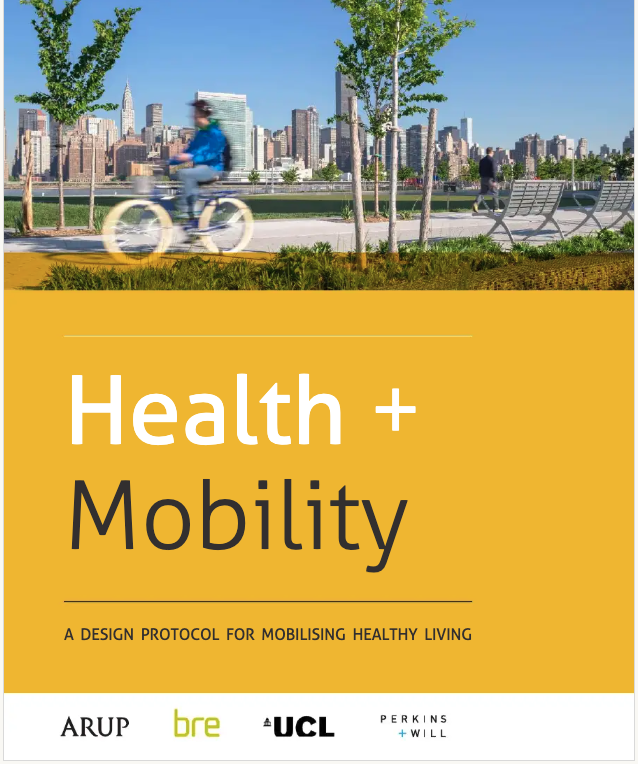
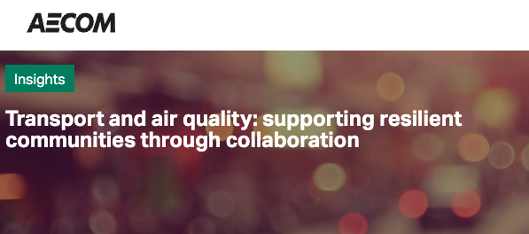
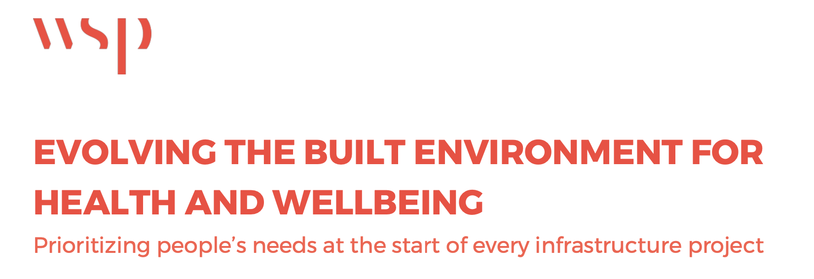
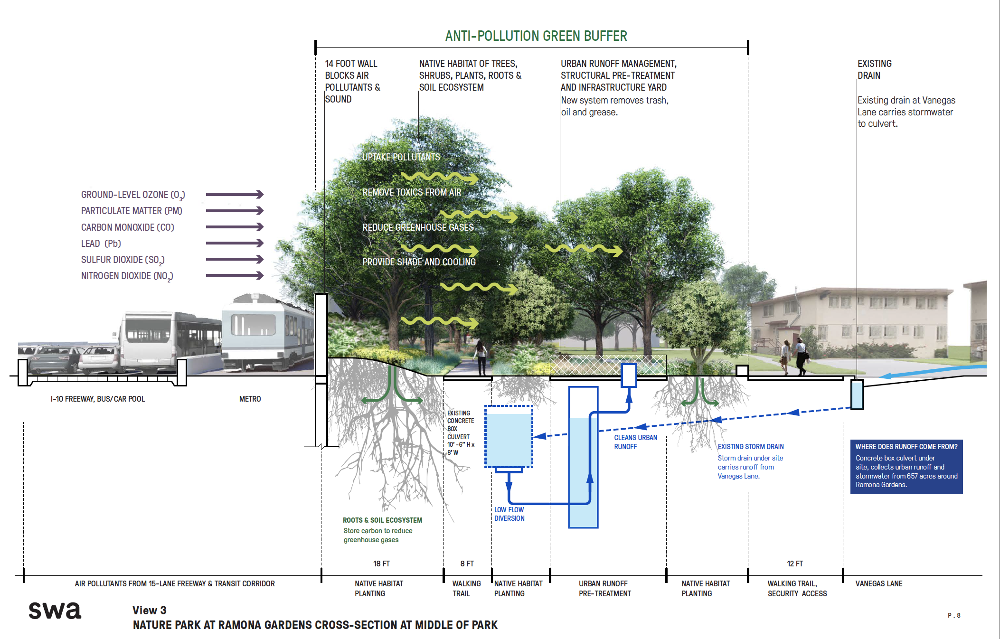
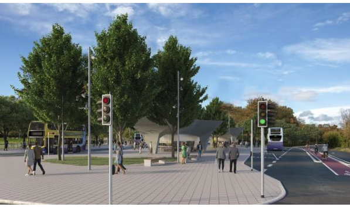
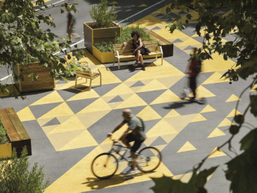

gantt
dateFormat YYYY-MM-DD
axisFormat %Y Q%q
section Phase 1
Partner with health research institution - KU :p1, 2026-01-01, 3y
Pilot health impact assessments :p2, 2026-03-01, 195d
Develop case studies :p3, 2026-06-15, 120d
Create first marketing materials :p4, 2026-10-01, 90d
section Phase 2
Bid on tenders with health focus :p5, 2027-01-01, 500d
Offer health co-benefit analysis :p6, 2027-03-01, 120d
Publish research :p7, after p6, 90d
Speak at conferences :p8, 2027-06-01, 60d
section Phase 3
Develop proprietary software tools :p9, 2027-07-01, 2y
Offer training courses :p10, 2027-09-01, 180d
Lead consortium bids :p11, 2028-01-01, 180d
section Future
European Health Space - release :milestone, p13, 2029-01-01, 10d
Next gen. tools and oportunities :p14, after p13, 180d
Urban Development & Health
Industry PhD proposal for Innovation Fund
Partners
Greg Maya
City Science Coordinator, Norman Foster Institute (NFI) Freelance data consultant for various NGOs
My focus lies in data-driven analysis of urban environments, particularly through applied research in health and technology integration in urban planning design and policy. Trained as an architect with a Summa Cum Laude degree and a MSC in Space Syntax,I have transitioned from traditional design to consulting on modeling complex systems within the built environment.
Kobenhavns Universite
Department of Public Health
Global Health Section
Focuses on interdisciplinary research and education in global health. Their work encompasses:
- Research: The section conducts studies on a wide range of topics, including diabetes, double burden of disease and environmental health, amongst many others.
- Education: They offer several educational programs, including: PhD programm on Public Health.
Context
Urban environments play a crucial role in shaping health outcomes, particularly in addressing non-communicable diseases (NCDs). This research is aimed at positioning urban planning as a proactive health intervention, capable of reducing healthcare burdens and enhancing overall quality of life.
Despite strong evidence linking urban design and public health, current planning frameworks often neglect these considerations. There is an opportunity to bridge that gap by systematically translating health outcomes into actionable spatial decisions and integrating them within the current policy and design frameworks. It will explore methodologies for new design tools that orient urban and transport planners into health positive outcomes and quantifying the economic advantages of said approaches.
The study seeks to provide decision-support tools and strategic insights for city designers, authorities and other stakeholders. Aligning planning with public health objectives should contribute to creating more liveable, resilient, and equitable cities.
Problem Statement
- Non Communicable Deseases (NCDs) are responsible for +70% of deaths (WHO, 2024).
- European cities getting older, hence, more prone to suffering from an increase in NCDs.
- Urban health issues are linked to poor spatial planning, pollution, and sedentary lifestyles.
- Lack of actionable indicators that could lead to design decisions with better health outcomes.
- Inadequate integration of health considerations in urban planning practices and transport sectors.
- Lack of awareness on the long-term economic costs of designs that do not incorporate a minimum standard for health outcomes.
- Failing to leverage the built environment as a preventative health opportunity.
Opportunity
Capture the growing demand for healthier, sustainable urban environments acknoledged by the general public and reflected by policy.
Solution Overview
Introducing a data-driven urban planning model to enhance urban health outcomes.
Uncovering the most direct links from Urban Determinants to Health Outcomes (NCDs).

The model should have the potential to benefit from ‘easy wins’ but also to develop complexity and robustness over time.
Commercial Opportunity
“Shift health from a mere co-benefit to a cross-cutting lens in urban planning.”
Enhance Existing Service Lines
- Transport & Active Travel
- Urban Planning & Masterplanning
- Environmental Impact Assessments (EIAs) & Sustainability
Develop New, Specialized Service Offerings
- Strategic Health-Urban Advisory
- Urban Health Analytics & Diagnostics
- Decision-Support Tools & Platforms
Unlock New Markets & Funding Streams
- Public Health Sector Collaboration
- ESG & Impact Investing
- Proactive Project Identification
Commercial Pipline

Competitive Advantage & Differentiation
- Leverage advanced data analytics and urban modeling for evidence-based planning with a purpose: Health.
- Integration of cross-sectoral knowledge (public health, urban planning, sustainability).
- First-mover advantage in health-centric urban consulting in current and potential new markets.
- Collaboration with leading academic institutions and access to cutting-edge research.
Research Objectives & Key Questions
Objective:
To explore the commercial viability of integrating health outcomes in urban/transport planning.
Key Research Questions:
Can urban planning strategies mitigate the impact of non-communicable diseases (NCDs) through behavioural and environmental changes?
- What are the urban determinants of Health that affect most positively and negatively NCDs in case study cities?
- How can decision-support tools be designed to assist urban designers in aligning urban planning with public health objectives?
- What are the quantifiable economic advantages of prioritizing health-centric urban design?
- What role do spatial accessibility and inequality play in determining health outcomes?
Where is the Market ?
- RAMBOLL’s Neighbourhood Futures framework + SMART Mobility
- ARUP’s Health+Mobility Integration
- AECOM’s Air Quality and Health Focus
- WSP’s Built Environment Health Strategy
- Jacobs’ Health Infrastructure Integration
RAMBOLL’s SMART Mobility + partnership with Impact on Urban Health
Already positioned to integrate health into Transport strategies
Partnership with Impact on Urban Health to launch the Neighbourhood Futures framework
Smart Mobility expertise recognizes health challenges from car-centric planning:
- Congestion & noise
- Poor air quality
- Safety risks
Ramboll is ahead of competitors in quantifying how transport decisions impact community health.

Demonstrates strong foundation for expanding health-focused urban planning services.
ARUP’s Health+Mobility Integration
Sophisticated frameworks for integrating health considerations into transport infrastructure.
Liverpool, Knowledge Quarter, UK – Developed a walkable innovation district with active travel infrastructure linking education, health, and research institutions to promote healthy urban living.
Baton Rouge, Louisiana, US – Introduced a health-focused mobility plan to improve walking and cycling access in underserved neighbourhoods, reducing transport-related health inequities.
ARUP’s protocol provides frameworks for using local data to understand health and mobility issues, guiding infrastructure designs that support community health goals.

Main focus : air pollution, traffic accidents, and climate change.
AECOM’s Air Quality and Health Focus
Collaborative approach between transport and air quality teams.
- Beyond conventional traffic flow indicators toward wider considerations of health and wellbeing.
AECOM’s integrated teams deliver “pragmatic and sustainable solutions that are protective of human health and safety”, providing direct focus on real-world health outcomes for policy measures.

source: website link
WSP’s Built Environment Health Strategy
Their research shows that creating green buffer zones between communities and transportation corridors can improve air quality for residents, supporting respiratory health.
 
Emphasizes human-centered design as an investment in economic growth, recognizing that healthier populations translate into more robust workforces.
Jacobs’ Health Infrastructure Integration
Jacobs is delivering major infrastructure projects with health co-benefits.
- BusConnects Dublin. National Transport Authority (NTA)
Enhance “connectivity and community life” while providing greater certainty for accessing healthcare and education.

Source: website
Their approach recognizes that transport infrastructure directly impacts access to essential health services.
Reference Case Study 1
Barcelona Superblock Model

Transformation of urban blocks to reduce car dependency, increase green spaces, and promote active transport.
Impact:
- 667 preventable deaths annually from improved air quality, noise reduction, and increased physical activity.
- Economic impact of €1.7 billion annually from health benefits.
Relevance:
Demonstrates the commercial and societal value of integrating health in urban design.
Reference Case Study 2
The Healthy Cities Generator
Assesses health impacts of urban plans and visualizes effects on 30 health indicators.
- Physical, mental, and environmental health dimensions.
- Room to create more robust metrics.
Developed in collaboration with EIT Urban Mobility and the University of Lisbon.
- Recognized for practicality and innovation.
- Won the Best Research Paper award at the Healthy City Design International Congress (2023).
Major Contract Opportunities
Health Impact Assessment (HIA) Requirements
The European market is showing strong demand for HIA services in transport planning. Recent tenders demonstrate this trend:
- UK’s Clyde Metro Multi-Disciplinary Consultancy Framework (£20M) specifically includes “Health Impact Assessment” and “Impact Assessments” as dedicated service lots12
- NHS Sustainable Transport & Infrastructure Framework (£500M) awarded multiple consultancies for sustainable transport solutions that support health outcomes3
- Transport for London’s Transport Planning & Impact Monitoring Framework includes specific lots for “Health, Equalities and Socio economic assessments”4
International Development Opportunities
Major development projects increasingly require health impact considerations:
- Georgian Sustainable Urban Mobility Project (2022) specifically sought consultants to align transport modes with climate protection goals and contribute to “better living conditions for the population”5
- Peru’s Urban Passenger Transportation Service (2025) improvement projects include health and environmental considerations as core requirements6
Strategic Implementation Framework
Building Internal Capabilities
Establish a dedicated Health Outcomes Research Unit within the transport division, similar to successful models at ARUP and WSP. This unit would:
- Develop proprietary health impact assessment methodologies for transport projects
- Create quantitative tools linking transport interventions to health outcomes
- Build partnerships with public health institutions and research organizations
- Train existing transport planners in health impact evaluation techniques
Market Entry Strategy Timeline
- Phase 1: Capability Development (6-12 months)
- Phase 2: Market Positioning (12-18 months)
- Phase 3: Market Leadership (18-36 months)
Next Steps
- Find internal unit to be the host of this research.
- Potentials
- Transport (Active Travel)
- Environment and Health
- Urban Planning
- Potentials
- Tailor the proposal based on market knowledge
- Present Proposal: (Aug 2025) Collaborate to develop a proposal which is commercially sound and forward-thinking into the future market needs and academic research
A big part of this is already on its way!
© Copyright 2025 Greg Maya - Back to site